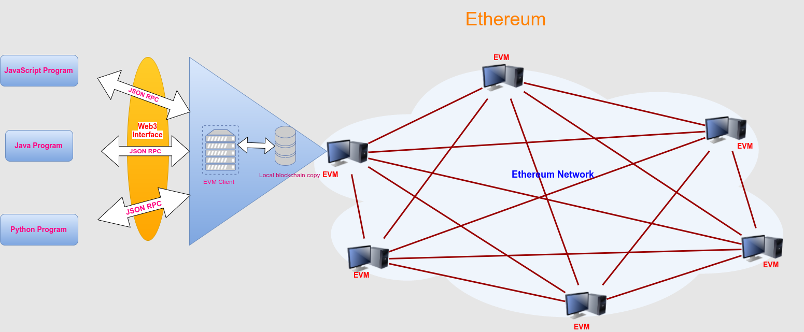
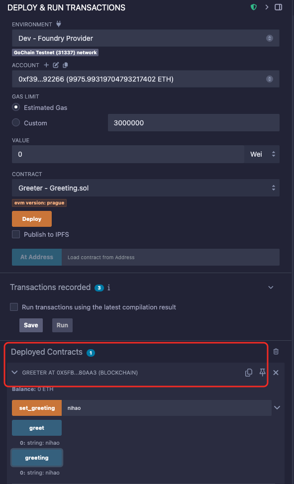
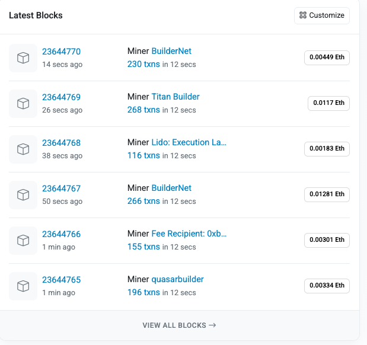

Web3.py 简介 面向 Python 开发者的以太坊
今天，我将带领大家开启 Web3.py 库的使用之旅。倘若你是一名 Python 开发者，那么 Web3.py 将是你与以太坊区块链进行交互的不二之选。在接下来这个由 6 部分构成的系列教程中，我会循序渐进地为你展示如何运用 Web3.py 与以太坊区块链展开交互。
什么是 Web3.py？
本视频作为系列教程的第一部分（共六部分），将首先对 Web3.py 库进行整体概述，随后演示如何查看以太坊账户的余额。
利用以太坊开发区块链应用程序，涉及多个不同方面：
- 开发智能合约：运用 Solidity 编程语言编写可在区块链上运行的程序。
- 开发与区块链交互的客户端：编写用于从区块链读取和写入数据的代码（涵盖与智能合约的交互）。
Web3.py 能够助力你完成第二项任务，即开发与以太坊区块链交互的客户端。这里所说的“客户端”，并非特指面向用户的应用程序（如 Web 应用程序），而是指通过读取区块链信息、写入新的交易数据，或者借助智能合约执行业务逻辑，来与区块链进行交互的“客户端”。鉴于你使用 Python 编写代码，这个“客户端”可能是一个抓取区块链数据的脚本，也可能是执行智能合约函数的服务器进程。Web3.py 是一个库集合，借助它，你可以执行以下操作：创建以太坊交易、从智能合约读取和写入数据、创建智能合约等等！
下面，让我们一同看看如何使用 Web3.py 与以太坊进行交互（如下图所示）： 
Web3.py 通过 JSON RPC （远程过程调用）协议与以太坊区块链实现通信。以太坊是一个点对点的节点网络，它将所有数据分布在网络中的每个节点上。也就是说，网络上的每个节点都保存着网络上所有代码和数据的副本。Web3.py 允许我们使用 JSON RPC 代表整个网络向单个以太坊节点发出请求。如此一来，我们便能够通过单个节点读取和写入网络数据。这有点类似于向 Web 服务器上的 JSON API 发出 HTTP 请求。
依赖项
让我们着手安装并配置使用 Web3.py 进行开发所需的各项依赖。
Python 环境
首先，请确保你的系统中已安装合适版本的 Python。在本系列教程中，我使用的是 3.6.7 版本。为了更好地管理开发环境，建议你使用环境管理器，如 Python 自带的 venv 或 pyenv，你可以从官方渠道下载它们。
要检查你的机器上是否已安装 Python，可以在终端中输入以下命令：
python --version在继续后续操作前，请务必确认已安装 Python 3 版本。如果你的系统中安装了多个 Python 版本，并且需要使用 python3 命令来访问 Python 3 版本，那么在本系列教程的所有 Python 终端命令中，都请使用 python3 替代 python。
接下来，使用 venv 或 pyenv 创建一个虚拟环境，用于安装后续的 Python 依赖项。
Web3.py 库安装
在终端中，你可以使用 pip 工具来安装 Web3.py 库，命令如下：
pip install web3Infura RPC URL 配置
为了通过 JSON RPC 连接到以太坊主网节点，我们需要获取访问以太坊节点的途径。有几种方式可以实现这一目标。其一，你可以使用 Geth 或 Parity 自行运行一个以太坊节点，但这需要你下载大量的区块链数据并保持节点的同步状态。如果你曾尝试过这种方式，就会知道这其中的难度和复杂性。
更为便捷的方式是，使用 Infura 提供的服务来访问以太坊节点，而无需自己运行节点。Infura 是一项免费的服务，它提供了远程的以太坊节点。你只需注册 Infura 账号，获取 API 密钥以及要连接的网络的 RPC URL 即可。
注册完成后，你的 Infura RPC URL 格式应如下所示：
https://mainnet.infura.io/v3/YOUR_INFURA_API_KEY_GOES_HERE
检查账户余额
当所有依赖项都安装并配置完成后，你就可以开始使用 Web3.py 进行开发了！首先，在终端中启动 Python shell，命令如下：
现在，你已经成功打开了 Python shell！在 Python shell 中，你可以按照以下方式导入 Web3.py 库：
from web3 import Web3
infura_url = f"https://mainnet.infura.io/v3/{YOUR_INFURA_API_KEY}"
web3 = Web3(Web3.HTTPProvider(infura_url))现在，您已经拥有一个实时的 Web3 连接，可以与以太坊主网通信了！我们可以像这样确保连接成功：
web3.is_connected()True
如果连接有效，则返回 true。接下来，我们可以像这样检查最新的区块号：
web3.eth.block_number23644784
这是最新的区块号！现在让我们检查一下这个账户的余额： 0x90e63c3d53E0Ea496845b7a03ec7548B70014A91 。我们可以通过使用 web3.eth.get_balance() 检查余额来了解这个账户持有多少以太币。
首先，让我们将地址分配给一个变量：
account = "0x388C818CA8B9251b393131C08a736A67ccB19297"
balance = web3.eth.get_balance(account)
web3.from_wei(balance, "ether")Decimal('19.647278378122494711')
这就是账户余额！不过，需要注意的是，这个账户余额是以 wei 表示的，wei 是 Ether 的一个分支，类似于一分钱。你必须用 10 ** 18 除以 wei 才能将其转换为 Ether。
我还要提一下，通读 Web3.py 文档可以让你全面了解该库的功能。我强烈建议你浏览一下，即使你并不完全了解它的功能。你可以在这里找到 Web3.py 的完整文档： https://web3py.readthedocs.io/en/stable/
此外，请注意，Web3.py 正在积极开发中。您可以访问 Web3.py 的 GitHub 仓库来跟踪其进展，也可以阅读代码以更好地理解该库本身。您可以在此处找到 GitHub 仓库： https://github.com/ethereum/Web3.py/
使用 Web3.py 从智能合约读取数据
欢迎来到系列教程的第二集。在本集中，我将为大家详细介绍如何使用 Web3.py 从以太坊区块链读取智能合约数据。
接下来，我们继续导入所需的库，并设置 web3 连接：
import json
from web3 import Web3
infura_url = f"https://mainnet.infura.io/v3/{YOUR_INFURA_API_KEY}"
web3 = Web3(Web3.HTTPProvider(infura_url))为了使用 Web3.py 从智能合约中读取数据，我们需要以下两个关键要素：
- 目标智能合约的 Python 表示
- 调用智能合约函数以读取数据的方法
我们可以通过 web3.eth.Contract() 函数获取以太坊智能合约的 Python 表示。该函数需要两个核心参数：智能合约的 ABI（应用二进制接口）和智能合约地址。
智能合约 ABI（Application Binary Interface）是一个 JSON 数组，它详细描述了特定智能合约的接口信息和工作方式。以下是一个 ABI 示例：
abi = [{"constant":true,"inputs":[],.....],"name":"Transfer","type":"event"}]（注：这是一个完整的 ABI 数组示例，结构较为复杂。此示例展示的是 OmiseGo 代币的 ABI，该代币实现了 ERC - 20 代币标准。若您对 ERC - 20 标准不熟悉，可参考相关视频进行了解。您可以在 Etherscan 上查询该代币的详细信息，包括其 ABI 和地址。在本示例的后续部分，我们将使用此智能合约 ABI。）
在此，我将存储来自以太坊主网的 OMG 代币地址：
address = "0xd26114cd6EE289AccF82350c8d8487fedB8A0C07"现在，我们已经获取了 ABI 和地址这两个必要值，接下来就可以创建 OMG 代币智能合约的完整 Python 表示，代码如下：
address = "0xd26114cd6EE289AccF82350c8d8487fedB8A0C07"
abi = json.loads('[{"constant":true,"inputs":[],"name":"mintingFinished","outputs":[{"name":"","type":"bool"}],"payable":false,"type":"function"},{"constant":true,"inputs":[],"name":"name","outputs":[{"name":"","type":"string"}],"payable":false,"type":"function"},{"constant":false,"inputs":[{"name":"_spender","type":"address"},{"name":"_value","type":"uint256"}],"name":"approve","outputs":[],"payable":false,"type":"function"},{"constant":true,"inputs":[],"name":"totalSupply","outputs":[{"name":"","type":"uint256"}],"payable":false,"type":"function"},{"constant":false,"inputs":[{"name":"_from","type":"address"},{"name":"_to","type":"address"},{"name":"_value","type":"uint256"}],"name":"transferFrom","outputs":[],"payable":false,"type":"function"},{"constant":true,"inputs":[],"name":"decimals","outputs":[{"name":"","type":"uint256"}],"payable":false,"type":"function"},{"constant":false,"inputs":[],"name":"unpause","outputs":[{"name":"","type":"bool"}],"payable":false,"type":"function"},{"constant":false,"inputs":[{"name":"_to","type":"address"},{"name":"_amount","type":"uint256"}],"name":"mint","outputs":[{"name":"","type":"bool"}],"payable":false,"type":"function"},{"constant":true,"inputs":[],"name":"paused","outputs":[{"name":"","type":"bool"}],"payable":false,"type":"function"},{"constant":true,"inputs":[{"name":"_owner","type":"address"}],"name":"balanceOf","outputs":[{"name":"balance","type":"uint256"}],"payable":false,"type":"function"},{"constant":false,"inputs":[],"name":"finishMinting","outputs":[{"name":"","type":"bool"}],"payable":false,"type":"function"},{"constant":false,"inputs":[],"name":"pause","outputs":[{"name":"","type":"bool"}],"payable":false,"type":"function"},{"constant":true,"inputs":[],"name":"owner","outputs":[{"name":"","type":"address"}],"payable":false,"type":"function"},{"constant":true,"inputs":[],"name":"symbol","outputs":[{"name":"","type":"string"}],"payable":false,"type":"function"},{"constant":false,"inputs":[{"name":"_to","type":"address"},{"name":"_value","type":"uint256"}],"name":"transfer","outputs":[],"payable":false,"type":"function"},{"constant":false,"inputs":[{"name":"_to","type":"address"},{"name":"_amount","type":"uint256"},{"name":"_releaseTime","type":"uint256"}],"name":"mintTimelocked","outputs":[{"name":"","type":"address"}],"payable":false,"type":"function"},{"constant":true,"inputs":[{"name":"_owner","type":"address"},{"name":"_spender","type":"address"}],"name":"allowance","outputs":[{"name":"remaining","type":"uint256"}],"payable":false,"type":"function"},{"constant":false,"inputs":[{"name":"newOwner","type":"address"}],"name":"transferOwnership","outputs":[],"payable":false,"type":"function"},{"anonymous":false,"inputs":[{"indexed":true,"name":"to","type":"address"},{"indexed":false,"name":"value","type":"uint256"}],"name":"Mint","type":"event"},{"anonymous":false,"inputs":[],"name":"MintFinished","type":"event"},{"anonymous":false,"inputs":[],"name":"Pause","type":"event"},{"anonymous":false,"inputs":[],"name":"Unpause","type":"event"},{"anonymous":false,"inputs":[{"indexed":true,"name":"owner","type":"address"},{"indexed":true,"name":"spender","type":"address"},{"indexed":false,"name":"value","type":"uint256"}],"name":"Approval","type":"event"},{"anonymous":false,"inputs":[{"indexed":true,"name":"from","type":"address"},{"indexed":true,"name":"to","type":"address"},{"indexed":false,"name":"value","type":"uint256"}],"name":"Transfer","type":"event"}]')
contract = web3.eth.contract(address=address, abi=abi)
contract<web3._utils.datatypes.Contract at 0x1097afb30>
既然本课的第一部分已经完成，接下来我们需要完成第二部分：通过调用智能合约的函数来读取数据。所有智能合约函数都列在指定的 Web3 合约的 contract.functions 命名空间下。例如，如果合约实现了 myFunction()，我们可以调用 contract.functions.myFunction()。
太棒了！理论上，我们可以调用智能合约实现的任何函数。但是，如何才能知道它具体实现了哪些函数呢？首先，我们可以将 contract.functions 记录到控制台，查看返回的内容（你可以在上面的视频中看到我是如何操作的）。不过，由于这个智能合约实现了 ERC - 20 标准，我们已经知道它实现了多个函数，例如 totalSupply()、name()、symbol() 和 balanceOf()。我们可以分别读取这些函数的值，代码如下：
首先，所有 OMG 代币的总供应量：
totalSupply = contract.functions.totalSupply().call()
totalSupply140245398245132780789239631
web3.from_wei(totalSupply, 'ether')Decimal('140245398.245132780789239631')
二、OMG 代币名称：
contract.functions.name().call()'OMGToken'
三、OMG 代币的符号：
contract.functions.symbol().call()'OMG'
最后，我们可以查看指定账户的余额。我在 Etherscan 上查找了一位 OMG 持有者，找到了这个地址0xd26114cd6EE289AccF82350c8d8487fedB8A0C07 。我们可以像这样查看这个账户的余额：
balance = contract.functions.balanceOf('0xd26114cd6EE289AccF82350c8d8487fedB8A0C07').call()web3.from_wei(balance, 'ether')Decimal('35983.547643640001789023')
就是这样！使用 Web3.py 从智能合约读取数据就是这么简单。
发送以太坊交易
欢迎来到由 6 部分组成的教程系列的第三部分。在本视频中，我将向大家详细介绍如何使用 Web3.py 在以太坊区块链上创建交易。本课程适合从初学者到高级用户的各类人群，我将从基础概念开始，逐步深入讲解。在学习的过程中，你不仅能够掌握 Web3.py 的使用方法，还能深入理解以太坊区块链上交易运作的基础知识。
每当你在以太坊区块链上创建一笔交易时，实际上就是在向区块链写入数据并更新其状态。创建交易的方式有很多种，例如将以太币从一个账户发送到另一个账户、调用能够写入数据的智能合约函数，以及将智能合约部署到区块链上。通过使用 Web3.py 库来执行这些操作，并仔细观察每个步骤的工作原理，我们能够更加深入地理解这些概念。
为了将交易广播到网络，有多种方法可供选择。在本教程中，为了保护私钥这一极其敏感的数据，我将使用个人开发的区块链进行演示。我强烈推荐大家使用 Foundry + Anvil 组合作为你的以太坊开发个人区块链。Foundry 是 Rust 生态下的一个强大的智能合约开发工具链，而 Anvil 则是它提供的本地 EVM 模拟器／节点。该工具在 Windows、Mac 和 Linux 系统上均可使用，并且提供了桌面应用程序和命令行工具两种形式，方便你根据自己的需求进行选择。
以下是安装和启动 Anvil 的命令：
curl -L https://foundry.paradigm.xyz | bash
anvil您可以在此处[https://github.com/foundry-rs/foundry]找到适合您操作系统的最新版本。下载存档包后，解压安装程序并执行设置步骤。安装完成后，每次打开它时都应该看到此屏幕：
_ _
(_) | |
__ _ _ __ __ __ _ | |
/ _` | | '_ \ \ \ / / | | | |
| (_| | | | | | \ V / | | | |
\__,_| |_| |_| \_/ |_| |_|
1.4.3-stable (fa9f934bda 2025-10-22T05:33:20.255411000Z)
https://github.com/foundry-rs/foundry
Available Accounts
==================
(0) 0xf39Fd6e51aad88F6F4ce6aB8827279cffFb92266 (10000.000000000000000000 ETH)
......
Private Keys
==================
(0) 0xac0974bec39a17e36ba4a6b4d238ff944bacb478cbed5efcae784d7bf4f2ff80
......
Wallet
==================
......
0
Listening on 127.0.0.1:8545
太棒了！🎉现在您已经拥有一个正在运行的个人区块链网络！
现在让我们代码连接到 anvil，而不是 Infura 节点：
from web3 import Web3
anvil_url = "http://127.0.0.1:8545"
web3 = Web3(Web3.HTTPProvider(anvil_url))
web3.is_connected()True
现在从 anvil 复制前两个帐户并将它们分配给如下变量：
account_1 = web3.eth.accounts[0]
account_2 = web3.eth.accounts[1]
print("account_1 余额：", web3.eth.get_balance(account_1))
print("account_2 余额：",web3.eth.get_balance(account_2))account_1 余额： 10000000000000000000000
account_2 余额： 10000000000000000000000
接下来，从列表中获取第一个帐户的私钥。前往 anvil 的终端显示， 找到 Private Keys。复制私钥后，将其赋值给一个变量，如下所示：
private_key = '0xac0974...' # 替换为 account_1 的私钥现在让我们构建一个以太坊交易，将以太币（ETH，以太坊的加密货币）从 account_1 发送到 account_2。我们可以像这样构建一个交易字典，该字典包含将广播到区块链的所有必要信息：
nonce = web3.eth.get_transaction_count(account_1)
tx = {
'nonce': nonce,
'to': account_2,
'value': web3.to_wei(1, 'ether'),
'gas': 2000000,
'gasPrice': web3.to_wei('50', 'gwei'),
}
signed_tx = web3.eth.account.sign_transaction(tx, private_key)
tx_hash = web3.eth.send_raw_transaction(signed_tx.raw_transaction)
web3.to_hex(tx_hash)'0x007a4876a06e0e2b22f83f05e5a5b92d0000d99f5b0fed5e64197620c81adc53'
代码解释：
-
获取 Nonce
nonce = web3.eth.get_transaction_count(account_1)- Nonce 是账户发出的交易计数（从 0 开始）。
- 它是一个必填字段，用于防止双重支付（double-spending）和交易重放攻击（replay attacks）。
- 每次交易被确认后，nonce 会递增。
-
构建交易对象
tx = { 'nonce': nonce, 'to': account_2, 'value': web3.to_wei(1, 'ether'), 'gas': 2000000, 'gasPrice': web3.to_wei('50', 'gwei'), }nonce：当前交易的 nonce（必须与账户的当前交易计数匹配）。to：接收 ETH 的目标地址（account_2）。value：要发送的 ETH 金额，使用web3.to_wei()转换单位（这里发送 1 ETH）。gas： gas 限制（即最多消耗的 gas 数量），这里设为 2,000,000（足够完成普通 ETH 转账）。gasPrice：每单位 gas 的价格（50 Gwei），影响交易被打包的速度（价格越高，矿工越优先打包）。
补充说明：
-
gas和gasPricegas是交易执行的计算资源上限，如果交易消耗的 gas 超过这个值，交易会失败并回滚。gasPrice是你愿意为每单位 gas 支付的费用（1 Gwei = 10⁹ Wei，1 ETH = 10¹⁸ Wei）。- 你可以用
web3.eth.gas_price获取当前推荐的 gas 价格（动态变化）。
-
签名交易
上述代码只是构建了交易，尚未签名。要广播交易，还需要用私钥对交易进行签名：signed_tx = web3.eth.account.sign_transaction(tx, private_key) tx_hash = web3.eth.send_raw_transaction(signed_tx.raw_transaction)（注：实际使用时请妥善保管私钥，不要硬编码在代码中！）
-
动态 Gas 价格（可选）
如果你想优化手续费，可以动态获取当前 gas 价格：gas_price = web3.eth.gas_price # 自动获取网络推荐的 gas 价格 tx['gasPrice'] = gas_price
关键点总结：
- Nonce 确保交易顺序正确且防止重放。
value必须用web3.to_wei()转换单位（ETH → Wei）。- Gas 相关参数 影响交易执行成本和速度。
- 实际使用时，务必通过安全方式管理私钥（如环境变量或密钥管理服务）。
最后我们观察一下余额的变化
print("account_1 余额：", web3.eth.get_balance(account_1))
print("account_2 余额：",web3.eth.get_balance(account_2))account_1 余额： 9998998950000000000000
account_2 余额： 10001000000000000000000
耶！你已经成功使用 Python 将 Ether 从一个账户发送到另一个账户了！
使用 Web3.py 调用智能合约函数
准备工作：部署智能合约
在调用智能合约函数之前，我们需要先将智能合约部署到区块链网络。这里我们使用 Remix IDE 进行快速部署（无需本地安装开发环境）。
1. 使用 Remix 部署智能合约
- 访问 Remix IDE
- 创建一个新文件
Greeter.sol，粘贴以下简单合约代码：
// SPDX-License-Identifier: GPL-3.0
pragma solidity >=0.8.2 <0.9.0;
contract Greeter {
string public greeting;
constructor() {
greeting = "Hello";
}
function set_greeting(string memory _greeting) public {
greeting = _greeting;
}
function greet() public view returns (string memory) {
return greeting;
}
}-
编译合约：
- 点击左侧”Solidity编译器”标签
- 确保编译器版本与合约声明匹配（^0.8.0）
- 点击”Compile Greeter.sol”
-
部署合约：
- 切换到”部署和运行交易”标签
- 在”Environment”下拉菜单中选择”Injected Provider - DEV “Foundry Provider”（测试用）
- 点击”Deploy”按钮
- 部署成功后，你会在”Deployed Contracts”部分看到你的合约

2. 获取合约ABI和地址
部署后，你需要记录：
- 合约地址：在Remix的”Deployed Contracts”部分显示
- 合约ABI：在编译后，点击”ABI”按钮复制JSON格式的ABI
编译后的 ABI 如下所示（您可以复制它以方便使用）：
abi = [
{
"inputs": [],
"stateMutability": "nonpayable",
"type": "constructor"
},
{
"inputs": [],
"name": "greet",
"outputs": [
{
"internalType": "string",
"name": "",
"type": "string"
}
],
"stateMutability": "view",
"type": "function"
},
{
"inputs": [],
"name": "greeting",
"outputs": [
{
"internalType": "string",
"name": "",
"type": "string"
}
],
"stateMutability": "view",
"type": "function"
},
{
"inputs": [
{
"internalType": "string",
"name": "_greeting",
"type": "string"
}
],
"name": "set_greeting",
"outputs": [],
"stateMutability": "nonpayable",
"type": "function"
}
]请注意，设置了一个“默认”帐户，我们将在上面的示例中使用它与区块链进行交互。
import json
from web3 import Web3
# Set up web3 connection with anvil
anvil_url = "http://127.0.0.1:8545"
web3 = Web3(Web3.HTTPProvider(anvil_url))
web3.eth.default_account = web3.eth.accounts[0]现在像这样存储智能合约地址（注意它必须是校验和格式to_checksum_address）：
contract_address = "0xe7f1725E7734CE288F8367e1Bb143E90bb3F0512"
contract_address = web3.to_checksum_address(contract_address)
contract_address'0xe7f1725E7734CE288F8367e1Bb143E90bb3F0512'
接下来，我们将像这样初始化合约：
contract = web3.eth.contract(address=contract_address, abi=abi)接下来，我们可以像这样读取默认问候语：
contract.functions.greet().call()'Hello'
最后，我们可以通过调用 set() 函数来设置新的问候语，如下所示：
# Set a new greeting
tx_hash = contract.functions.set_greeting('nihao').transact()
# Wait for transaction to be mined
web3.eth.wait_for_transaction_receipt(tx_hash)
# Display the new greeting value
contract.functions.greet().call()'nihao'
使用 Web3.py 部署智能合约
智能合约是部署在以太坊网络上的自执行程序。部署前需完成以下环境配置：
环境准备 安装 Solidity 编译器支持库：
pip install py-solc-x安装指定版本的 Solidity 编译器（示例使用 v0.8.30）：
from solcx import install_solc, set_solc_version
install_solc(version='0.8.30')
set_solc_version('0.8.30')强调：set_solc_version 函数确保您使用的是正确的编译器版本。
您现在应该准备好编译和部署contract。
以下示例贯穿以下步骤：
- 将 Solidity 合约编译为字节码和 ABI
- 初始化合约实例
- 使用 Contract 实例部署合约并发起交易
- 使用 Contract 实例与合约函数进行交互
from web3 import Web3
from solcx import compile_source
# Solidity source code
compiled_sol = compile_source(
'''
// SPDX-License-Identifier: GPL-3.0
pragma solidity >=0.8.2 <0.9.0;
contract Greeter {
string public greeting;
constructor() {
greeting = "Hello";
}
function set_greeting(string memory _greeting) public {
greeting = _greeting;
}
function greet() public view returns (string memory) {
return greeting;
}
}
''',
output_values=['abi', 'bin']
)
# retrieve the contract interface
contract_id, contract_interface = compiled_sol.popitem()# get bytecode / bin
bytecode = contract_interface['bin']
# get abi
abi = contract_interface['abi']# web3.py instance
w3 = Web3(Web3.EthereumTesterProvider())
# set pre-funded account as sender
w3.eth.default_account = w3.eth.accounts[0]Greeter = w3.eth.contract(abi=abi, bytecode=bytecode)# Submit the transaction that deploys the contract
tx_hash = Greeter.constructor().transact()
# Wait for the transaction to be mined, and get the transaction receipt
tx_receipt = w3.eth.wait_for_transaction_receipt(tx_hash)greeter = w3.eth.contract(
address=tx_receipt.contractAddress,
abi=abi
)greeter.functions.greet().call()'Hello'
tx_hash = greeter.functions.set_greeting('Nihao').transact()
tx_receipt = w3.eth.wait_for_transaction_receipt(tx_hash)
greeter.functions.greet().call()'Nihao'
使用 Web3.py 检查区块
如何使用 Web3.py 检查以太坊区块链的区块。分析以太坊区块链的历史记录时，检查区块通常很有用。Web3.py 有很多功能可以帮助我们做到这一点。例如，我们可以在 Etherscan 上构建类似这样的区块历史记录功能：

让我们开始使用 Web3.py 提供的一些功能。这个设置比之前的课程简单得多。我们将重新连接到主网来检查那里的区块：
from web3 import Web3
# Fill in your infura API key here
infura_url = f"https://mainnet.infura.io/v3/{YOUR_INFURA_API_KEY}"
web3 = Web3(Web3.HTTPProvider(infura_url))
web3.is_connected()True
首先，我们可以像这样获取最新的区块号：
web3.eth.block_number23644813
我们还可以像这样获取最新区块的所有数据：
web3.eth.get_block('latest')AttributeDict({'baseFeePerGas': 98176494,
'blobGasUsed': 393216,
'difficulty': 0,
'excessBlobGas': 393216,
'extraData': HexBytes('0xe29ca82051756173617220287175617361722e77696e2920e29ca8'),
'gasLimit': 45043772,
'gasUsed': 39905046,
'hash': HexBytes('0x0789473cf3dfd0b0bb9a2e62b00a8615ce4c122677bd0d1f3fec99bd93460a41'),
'logsBloom': HexBytes('0xffa7fbf2cde519db30f5a58df663a27197e4bc62afe1adfc3bffd9fcfd3fc2d37f9eb25de7ad74fcff574bffa97fed99ffef9fffbdfe6e37b3df23eeeafd8ab7ffbebbfcb77efdbe7cb556fdfb7aaafbfefef4b3efff9ff6db87fe7dbbe8fcde7da678edebaccfebb97fd79dea5cdffbaf21fb7db7973fe453826e7f1b3fcfda3ad7ab0e1fd3af3768ffa5aa1795d152ff0536ebe7f575ef977abdffbf9edeffe31fff67dceffadc87ff67eefedd37fa3a38fdefb0d7bf9dd3fefa7bff177ff57f2ffa2ef3fb5975d7936c7f6bf7bdfbffdf1eefdcfcecdd7cdf161ef5ad6fdef1b3bfede33ab76d29f6e7ede17dec7ffddcb670d59eeef6cdddf773e2cb79f7'),
'miner': '0x396343362be2A4dA1cE0C1C210945346fb82Aa49',
'mixHash': HexBytes('0xed43e9a0a48a5fa125681adb03a6c4e3590e58b11986d1c3ed691974a1c6dee9'),
'nonce': HexBytes('0x0000000000000000'),
'number': 23644813,
'parentBeaconBlockRoot': HexBytes('0x1c365e94c3fd9e7abdd86bdf69b83507dccaa1bebf88ffae504239002798e91f'),
'parentHash': HexBytes('0xbab3a1dd833a5d9ea01cb52dd7a88e03e3c9f626ac7c4c93f3be242f3b673957'),
'receiptsRoot': HexBytes('0xca0ae41cd8279c83023294d125cf8f672ac16e82d7aaa241676518ee08d4ef84'),
'requestsHash': HexBytes('0xe3b0c44298fc1c149afbf4c8996fb92427ae41e4649b934ca495991b7852b855'),
'sha3Uncles': HexBytes('0x1dcc4de8dec75d7aab85b567b6ccd41ad312451b948a7413f0a142fd40d49347'),
'size': 101261,
'stateRoot': HexBytes('0x663860cf65ecdb107449940ce3b0353fd58eeef37df8f18b86579323b8ff246a'),
'timestamp': 1761278495,
'transactions': [HexBytes('0x64b4a2bb72487e2ed563bbbccc844caf4a12e2ce3dfd9d98d49d74ab7d50103c'), ......],
'transactionsRoot': HexBytes('0x3397fe7a221a5beaa73c7faab3631020fb78e60b1b55cbc62937e38583efabe0'),
'uncles': [],
'withdrawals': [AttributeDict({'address': '0x0b26C05866e6353E46f4A7e2d10Cb42d4B583E57',
'amount': 109998072,
'index': 105757627,
'validatorIndex': 2021458})......],
'withdrawalsRoot': HexBytes('0xe6c70f7dbbfd8647c8e7ba2a2031d37ca9bca09bee039f72e176f5a632f72756')})
下面是以太坊（Ethereum）区块链上的区块信息的解释：
🔷 一、基本区块信息（Header）
| 字段 | 值 | 说明 |
|---|---|---|
number | 23644435 | 区块高度（Block Number），这是第 23,644,435 个区块。 |
hash | 0x69eb...7667 | 当前区块的哈希值（SHA3），唯一标识这个区块。 |
parentHash | 0x2690...07c3 | 上一个区块的哈希，用于链接到前一个区块，形成链式结构。 |
timestamp | 1761273923 | 时间戳（Unix 时间），对应 UTC 时间：2025-10-24 10:45:23（与当前时间接近，合理）。 |
miner | 0x4838...f97 | 出块矿工/验证者的地址（PoS 时代实际是提议者 validator）。 |
difficulty | 0 | 在以太坊转向 PoS（The Merge）后，难度为 0，不再有意义。 |
nonce | 0x0000000000000000 | PoW 非ces，PoS 中固定为 0。 |
mixHash | 0x44e2...06d6 | PoW 相关字段，现在无实际作用。 |
sha3Uncles | 0x1dcc...9347 | 叔区块哈希，此处为空列表，所以是空哈希。 |
extraData | 0x546974616e... | 附加数据，十六进制解码后为 ASCII：“Tian (titanbuilder.xyz)“，可能是矿池/客户端标识。 |
🔷 二、Gas 相关参数
| 字段 | 值 | 说明 |
|---|---|---|
gasLimit | 45,000,000 | 当前区块允许的最大 Gas 总量。 |
gasUsed | 8,951,783 | 本区块中所有交易实际消耗的 Gas 总和，约为容量的 20%。 |
baseFeePerGas | 316,260,888 wei (~0.316 gwei) | EIP-1559 引入的基础 Gas 费率（每单位 Gas 的最低费用）。用户需额外支付 priorityFee 给矿工。 |
🔷 三、状态与默克尔根（Merkle Roots）
这些是用于验证完整性和一致性的加密哈希：
| 字段 | 说明 |
|---|---|
stateRoot | 状态树根哈希，表示该区块执行后的全局账户状态。 |
transactionsRoot | 交易树根哈希，包含本区块所有交易。 |
receiptsRoot | 交易收据树根哈希，记录每笔交易执行结果（日志、状态等）。 |
logsBloom | Bloom Filter，快速判断某日志是否存在于收据中。 |
withdrawalsRoot | 提款操作的默克尔根（见下文）。 |
🔷 四、EIP-4844 Blob 相关字段（Proto-Danksharding）
这是 EIP-4844（Blob Transactions） 引入的新特性，支持 Layer2 扩展。
| 字段 | 值 | 说明 |
|---|---|---|
blobGasUsed | 786,432 | 本区块使用的 blob gas（约 768 KB）。每个 blob 最大 128KB，最多可容纳 6 个。 |
excessBlobGas | 1,572,864 | 超出目标 blob gas 的累计量，影响下个区块的 blobFee。 |
requestsHash | 0xe3b0...b855 | 请求列表哈希（目前为空，即 keccak256(空)），未来用于 P2P 交易广播优化。 |
✅ 这表明该区块包含了 Blob 类型的交易（常见于 Optimism、Arbitrum 等 L2 提交数据）。
🔷 五、交易信息
| 字段 | 值 | 说明 |
|---|---|---|
transactions | 列表（共 128 条） | 包含 128 笔交易的哈希（Tx Hash），可通过 eth.getTransaction(tx_hash) 查看详情。 |
transactionsRoot | 0x7c69...1145 | 所有交易构成的 Merkle 树根。 |
🔷 六、提款（Withdrawals）——上海升级后功能
以太坊在 上海升级（Shanghai Upgrade） 后支持质押 ETH 提款。此区块包含 17 笔提款。
'withdrawals': [
AttributeDict({
'address': '0x210b3CB99FA1De0A64085Fa80E18c22fe4722a1b',
'amount': 18081897, # 单位：Gwei
'index': 105751579,
'validatorIndex': 2014771
}),
...
]解读：
validatorIndex: 质押验证者的编号。address: 提款接收地址（即提款地址）。amount: 提款金额，单位是 Gwei（1 ETH = 10^9 Gwei）。- 示例：第一笔提款
18,081,897 Gwei ≈ 0.01808 ETH
📌 注意：多个提款来自同一地址（
0x210...a1b,0xB23...C93），可能是同一批验证者或同一质押服务商（如 Lido、Coinbase）的操作。
🔷 七、其他字段
| 字段 | 说明 |
|---|---|
size | 46,134 字节，约 45KB，表示整个区块序列化后的大小。 |
uncles | 空列表 []，表示本区块没有引用任何叔区块（在 PoS 中已废弃）。 |
parentBeaconBlockRoot | 指向共识层（Beacon Chain）的父区块根，体现 PoS 信标链与执行层的耦合。 |
如果我们要构建一个像上图所示的 Etherscan 那样的区块历史记录功能，我们需要获取链中最新区块的列表。我们可以先获取最新的区块，然后倒数，直到找到链中的最后 10 个区块。我们可以使用如下的 for 循环来实现：
latest = web3.eth.block_number
for i in range(0, 10):
print(web3.eth.get_block(latest - i))AttributeDict({'baseFeePerGas': 107648489, 'blobGasUsed': 393216, 'difficulty': 0, 'excessBlobGas': 0, 'extraData': HexBytes......})
......
Web3.py 还有另一个很棒的功能，可以让你检查特定区块中包含的交易。我们可以这样做：
hash = '0x66b3fd79a49dafe44507763e9b6739aa0810de2c15590ac22b5e2f0a3f502073'
web3.eth.get_transaction_by_block(hash, 2)AttributeDict({'blockHash': HexBytes('0x66b3fd79a49dafe44507763e9b6739aa0810de2c15590ac22b5e2f0a3f502073'),
'blockNumber': 5855123,
'from': '0xF7848Afd92397fbA7b08915639faE4f29F16e4cf',
'gas': 66666,
'gasPrice': 66000000000,
'hash': HexBytes('0x2d14bc5f3ff31f312297715e73d7a04c72ae93f4466b881f2a2780b41b6e3c4f'),
'input': HexBytes('0xa9059cbb00000000000000000000000099fe5d6383289cdd56e54fc0baf7f67c957a88880000000000000000000000000000000000000000000001144b9d7142dc2b0000'),
'nonce': 1,
'to': '0x8912358D977e123b51EcAd1fFA0cC4A7e32FF774',
'transactionIndex': 2,
'value': 0,
'type': 0,
'chainId': 1,
'v': 38,
'r': HexBytes('0xb96c587cb0ddcb147b04a72a857431660d52ad0dcb49b136652e07beee2da66a'),
's': HexBytes('0x4e1d1547b99c8c338483d1ff7521e575547f5dde85b990ebe8e6cbbf21763067')})
就是这样！使用 Web3.py 检查区块就是这么简单。